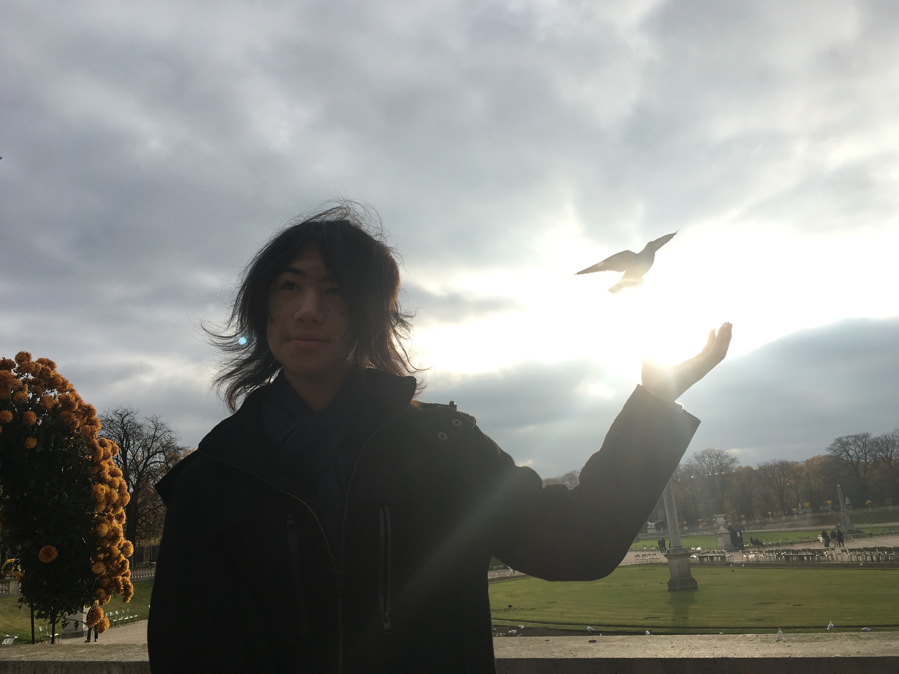

Note:
This was a picture that was taken with incredible luck,
not sure how my brother got this bird in the picture, but it looks awesome!
Hello there! I’m Zachary Diodati, but my friends call me Dio. In order to invent new industries and play around in this sandbox known as the universe, I want to become a mechatronics engineer and explore technological potential. I can do this, hopefully, while making new friends and learning new things on my journey. I’ve taken various engineering classes, such as computer science/engineering, cybersecurity, and currently digital electronics. I plan to utilise all of my skills to create my own tech company that provides unique and inventive solutions, improvements, or advancements to the aspects of everyday life.
My life at the moment contains staying at home during the quarantine and keeping up with homework. I've accepted admission into Purdue, so that's exciting! Currently, I’m also taking a digital electronics class, which deals with designing and prototyping electrical circuits. When I have time (the little that I have) I enjoy working on personal projects such as painting Nerf guns, Building various LARP weapons, trying to make a company, soldering, coding machine learning AI, Playing with IMUs, playing video games, and doing whatever else I feel is interesting at the moment. Because of this I tend to dabble in almost everything, from engineering and science to cooking and random tomfoolery.
I fuel my soul with curiosity. I like to try new things and give myself new perspectives. I think more people should try it because it's really enlightening when looking at life, it's fun!
This site contains all sorts of things, like my resume, projects I have done, and a bit about me as well! I hope you enjoy looking at the rest of the website, as I had fun creating it! Thank you for your time to take a look at me and my interests!